About me
Data analyst and developer who builds custom AI agents, automated data pipelines and analytics products, with a background in innovation management and environmental policy. PhD candidate in regenerative development, innovation management and data analysis at the University of Coimbra under a joint supervision agreement with Wageningen University in the Netherlands (thesis concluded, awaiting PhD jury).
Over 12 years working across government, academia, and civil society, from project management to designing AI-based data pipelines and co-authoring EU-commissioned climate policy reports.
Team member of one of the three AI-infrastructure projects highlighted by the European Commission during the EU's Civic Tech Hackathon 2026 (Brussels, June).
Former appointed member of Portugal's governmental task force for the National Sustainability Investment Plan. EU Climate Pact Ambassador. Member of the research network of the European Union Agency for Fundamental Rights (EU's FRANET).
Two-time European Commission's EUTalentON selected participant, including Best Pitch winner during the first edition.
Regenerative Potential Index
Evaluation and futures modelling of big data
Regenerative Potential Index: a composite-indicator and scenario model applied to a decade of Amsterdam data
| Author | Sérgio Pedro |
|---|---|
| AI / tools |
Python – Statistical normalisation, dimension weighting, and temporal aggregation of urban regeneration data. Plotly – Interactive time-series and comparison charts for exploring RPI scores across districts. QGIS – Spatial analysis and map composition of district-level regeneration indicators. |
| Business value | One comparable score per territory and year, plus 2030 and 2050 scenario projections: scattered indicators become a decision tool |
| Use cases | Urban planning authorities, real-estate developers, impact investors, policy evaluators |
The Regenerative Potential Index (RPI) is an original evaluation framework from my PhD research that scores how capable a territory is of regenerating itself. It is built for both public and private sectors, and asks a forward-looking question rather than auditing the past. The model aggregates indicators across four dimensions (economic, environmental, political and social) into a single composite score (0 to 100) per territorial unit per year, and projects it to 2030 and 2050 under constrained, business-as-usual and optimistic scenarios.
This case study applies the RPI to the eight districts of the municipality of Amsterdam over a decade of data (2015 to 2024). The municipality's overall RPI in 2024 stands at 47.93, down from 49.98 in 2015. This modest decline conceals important contrasts: the environmental dimension improved (+1.46 points) while economic performance deteriorated sharply (-7.21 points, reaching 43.01 in 2024). The visualisations below are interactive, hover to inspect values, click legend entries to isolate districts, and use dropdowns to switch dimensions.
For decision-makers, a single comparable score turns scattered sustainability data into something usable. Municipal planning departments can prioritise regeneration spend across districts instead of applying a blanket policy citywide. Real-estate developers and impact investors get a benchmarkable regenerative-capacity signal before committing capital to a territory. Policy evaluators gain a way to track a territory's trajectory over time, rather than relying on a one-off static audit.
RPI overall score, time evolution (2015-2024)
Municipality aggregate declined from 49.98 to 47.93. Hover over points to inspect values.
RPI by dimension, time evolution
Environmental is the strongest dimension; economic is the weakest. Use dropdown to switch dimensions.
District comparison, 2024 snapshot
Ranks all eight districts plus the municipality aggregate for each dimension.
Scenario projections, 2030 and 2050
Constrained (p25) forecasts 35.79 by 2050; BAU (p50) projects 49.34; optimistic (p75) reaches 57.44.
Interactive district map, Amsterdam (2024)
Spatial distribution of RPI scores across Amsterdam's districts. Pan, zoom and hover to read scores.
Leads Radar
Automatic monitoring and reporting pipeline
Leads Radar: an automatic monitoring and reporting pipeline for dispersed physical sites
| Author | Sérgio Pedro |
|---|---|
| AI / tools |
Python – Data pipeline for collecting, cleaning, and analysing environmental conflict data across 14 mine sites. Plotly – Interactive dashboards for exploring media coverage, legal actions, and contamination signals. Leaflet – Interactive map with filters, search, and info panels for mine site visualisation. |
| Business value | Replicable, continuous risk and conflict monitoring across 14 sites, from raw signals to dashboards and a 45-page report |
| Use cases | Risk monitoring for extractive industries, ESG and compliance teams, regulators and NGOs |
This project presents a georeferenced leads radar, a replicable data pipeline for continuous environmental conflict monitoring across a portfolio of dispersed physical sites. It tracks four signal types, media coverage, legal disputes, civic engagement events, and contamination or depletion incidents, aggregates them per site, and surfaces patterns through interactive visualisations.
The case study shown below, developed in collaboration with Friends of the Earth Europe, applies this radar to 14 mine sites across Portugal between 2015 and 2026, producing eight dashboards. It covers active operations (Neves-Corvo, Panasqueira), contested projects (Barroso lithium mine, peaking at 56 articles in 2024), and abandoned sites (Lousal, Urgeiriça), across major river basins (Douro, Tagus, Sado, Mira, Cavado, Tâmega). The charts below reflect this one implementation, not the ceiling of what the methodology can cover, it scales directly to a European or global rollout, and generalises beyond mining to any sector with dispersed sites needing continuous risk or conflict monitoring.
1 · Interactive map
Mine locations across Portugal with filters, search, and info panel.
2 · Heatmap timeline
Articles per mine per year (2015-2026).
3 · Conflict types by mine
Water contamination, depletion, court, and NGO articles per mine.
4 · Water flags
Water contamination vs depletion per mine, with absolute/percentage toggle.
5 · Articles by year
Total articles per year, stacked by mine status.
6 · Mine summary grid
Colour-coded grid comparing all 14 mines across five environmental indicators.
7 · Events timeline
All documented environmental events by mine and year.
8 · Gantt timeline
Monitoring coverage periods with contamination and court markers.
The full report
45-page report covering 14 mine sites, water contamination and depletion incidents from 2015 to 2026.
Loop - EU Commission highlighted project
Multi-channel AI platform: voice, chatbot and open APIs
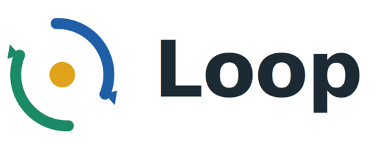
LOOP: an open-source, multi-channel AI platform that lets every EU citizen take part in public consultations
| Authors | Team project: Andres Pereira de Luce, Fernando Andres Garcia, Madalina Bouros, Rafail Promikyridis, Sérgio Pedro, Solene Wolff, Tjerk S Boorsma |
|---|---|
| AI / tools |
DeepSeek V4 Flash (via OpenRouter) – LLM for generating and summarising civic consultation content. OpenClaw – Multi-agent orchestration framework used during development of the LOOP platform. Infisical – Secrets management for API keys across the multi-channel platform. Docker – Containerisation for reproducible deployment across development and production environments. Tailscale – Secure peer-to-peer networking connecting LOOP services. Telnyx – Voice call API for reaching citizens without smartphones via DTMF interactive menus. |
| Software | Flask, Telegram Bot API, SQLite, Caddy, GitHub Actions |
| Business value | One shared backend serves voice and chat channels, reaching citizens without smartphones and closing the feedback loop |
| Use cases | Municipalities and public bodies broadening the reach of consultations, any organisation collecting feedback across several channels |
LOOP is an open-source civic participation gateway built for the EU Commission Civic Tech Hackathon 2026. It responds to three compounding failures named in the hackathon's own background note: consultations are fragmented across EU, national, and municipal platforms with no single point of discovery, the language they're written in is complex enough to keep participation theoretical rather than practical, and roughly 40 to 45 million EU citizens, one in ten, have no smartphone and are unreachable by any existing civic tech platform. LOOP does not replace official platforms like Decidim or Have Your Say, it makes them discoverable, understandable, and actionable through channels citizens already use.
Citizens register once, linking a phone number to a location and topic preferences, currently a lightweight mock flow standing in for a future EU Digital Identity Wallet integration, so the same architecture works for a single municipality or a nationwide rollout without changing the model. From there, LOOP proactively notifies citizens when a relevant consultation opens in their own municipality, country, or at EU level, rather than waiting for them to go looking for it.
Citizens interact through the channel that works for them: a voice call (DTMF keypad voting, no smartphone needed), or a Telegram bot with inline keyboards and AI-powered free-text opinion submission. Both channels share the same backend, a single SQLite vote database, so votes cast by phone are immediately visible in the Telegram interface and vice versa. Each consultation is presented as a four-field card: title, theme, deadline, and an AI-generated plain-language summary, with four possible responses: know more, express my opinion, vote yes, or vote no.
Every contribution triggers two things at once: an immediate, warmly worded confirmation naming the consultation and how many others have already taken part, and a one-tap shareable invitation the citizen can forward to bring someone else in. The Telegram bot sends free-text opinions to DeepSeek V4 Flash via OpenRouter for empathetic acknowledgement, and all API keys are managed through Infisical (open-source secrets manager), never hardcoded, injected at container startup. The full stack (Caddy, Docker, Flask, Telnyx, GitHub Actions) is open-source.
LOOP directly addresses the feedback loop absence identified as the primary driver of EU electoral abstention (49.3%): every vote and opinion routes to the official platform that launched the consultation, while an anonymised copy feeds a live tracking dashboard showing each consultation's status from open, to under review, to decision published, to implementation, answering the question citizens actually ask: did my participation make a difference?
The team's full vision reaches further than the two channels built for the 48-hour demo: a native RCS experience and an embedded chat bot inside WhatsApp and Signal alongside the Telegram and voice channels already working, and a website for citizens who prefer to browse. Interoperability is designed in from the start through an API and MCP layer, so any civic platform, Decidim, CONSUL, Adhocracy+, Have Your Say, can exchange participation data with any other instead of every platform building the same integration separately. Data sovereignty is a first-class design principle throughout, with the goal of citizen participation data that never leaves the jurisdiction where the participation happened. Positioned this way, LOOP is shared civic infrastructure a single municipality can deploy today, with a natural path toward adoption as a reference implementation for the future European Civic Tech Hub.
The citizen journey
From registration to tracked outcome: proactive notification, four-field card, response options, confirmation.
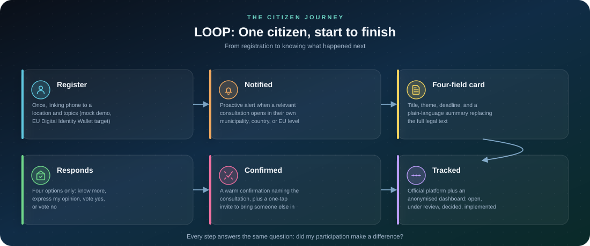
How wide the door opens
Telegram and voice working today; RCS, chatbot, and website in wider vision.
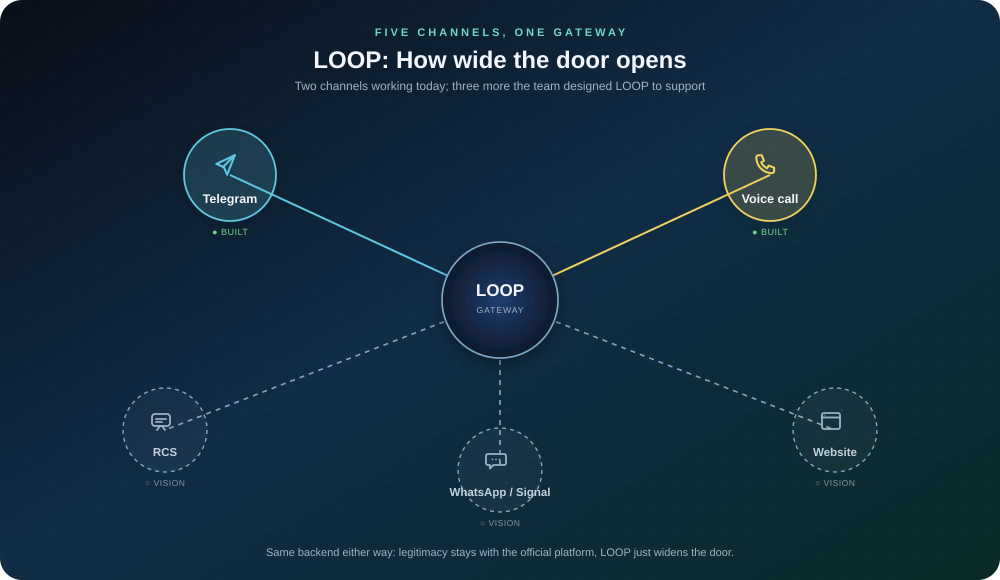
A gateway, not a new platform
LOOP connects citizens to Decidim, Have Your Say, CONSUL, and other platforms.
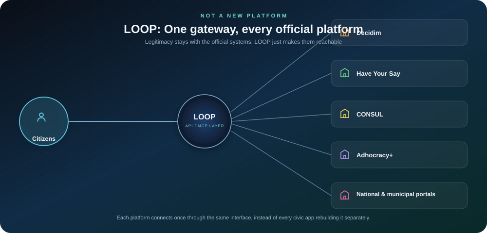
Georeferenced urban monitoring
Multi-criteria scoring and geospatial analytics for decision support
Georeferenced urban monitoring: a geospatial scoring model that shows where a city underperforms, down to the parish
| Authors | Sérgio Pedro, Giovanni Allegretti, Dirk Roep |
|---|---|
| AI / tools |
Python – Index construction, z-score standardisation, and dimension weighting for the livability framework. Plotly – Interactive bar charts and comparison visualisations for parish-level data. Leaflet – Interactive map with colour-coded parish scores and hover details. QGIS – Spatial data preparation and cartographic composition. |
| Business value | An eight-dimension breakdown that pinpoints the weak spot of each parish, instead of one opaque score |
| Use cases | Municipal planning, urban policy, EU cohesion funding, site selection and territory analytics |
How liveable a city is doesn't just shape day-to-day comfort, it shapes how strongly people engage in local democracy. This research reframes liveability through an ecocentric lens, moving beyond conventional indices that focus almost entirely on human convenience, and applies a modified liveability index to Porto, Portugal, at both the city and parish level.
The index combines eight dimensions: transport, culture, economy, inequality, security and pollution, environment, housing, and health, into a single score. Each dimension is first standardised (so very different units, like doctors per 1,000 people and air quality index, become comparable), then weighted by importance (environment counts most, at 20%, followed by health and security/pollution at 15% each), and finally combined into one bounded liveability score per geography. Inequality and insecurity/pollution pull the score down when they're high, since more of either makes a place less liveable.
The city-wide score shows clear room for improvement, particularly in transport, inequality, insecurity/pollution, and housing and urban regeneration, closely matching the municipality's own priorities, such as chronic traffic congestion and the air and noise pollution that comes with it. At the parish level, the two city-centre parishes, Cedofeita/Santo Ildefonso/Sé/Miragaia/São Nicolau/Vitória and Lordelo do Ouro e Massarelos, score highest, mainly because they concentrate far more shops, businesses and cultural venues than the rest of the city.
For decision-makers, an eight-dimension breakdown is more actionable than a single liveability number. Municipal planning departments can target the specific weak dimension in each parish (transport in one, housing in another) rather than applying a citywide blanket policy that overspends where it isn't needed. EU cohesion-policy stakeholders get a comparable, multi-dimensional basis for allocating funds across parishes, instead of relying on a single proxy metric that hides where the real gap is.
Interactive Porto map
Parish-level liveability scores with pan, zoom and hover.
Key findings
Parish ranking with scores and dimension breakdown.
AI agents 24/7
Custom personal AI agents
OpenClaw: a self-hosted fleet of custom AI agents for competitive intelligence and opportunity monitoring
| Author | Sérgio Pedro |
|---|---|
| AI / tools |
OpenClaw – Multi-agent orchestration framework for managing autonomous AI agents. browser-use – Agent-based browser navigation for extracting data from web sources. Playwright – Browser automation for reliable page interaction and data extraction. n8n – Workflow automation orchestrating data collection, processing, and notifications. Tavily – AI-powered search API for gathering relevant web content. Tailscale – Secure peer-to-peer networking connecting all pipeline services. Docker – Containerisation for isolated, reproducible agent runtimes. Infisical – Secrets management across the pipeline infrastructure. |
| Business value | Continuous, structured multi-source intelligence gathering that replaces daily manual checking of dozens of sources |
| Use cases | Market research, competitor monitoring, price tracking |
This is a multi-agent pipeline for automated competitive intelligence and opportunity monitoring, built on OpenClaw. Browser-use agents navigate and extract data directly from web sources, a dedicated calls bot continuously scrapes open calls for funding grants, prizes, competitions, and courses across dozens of sources, and n8n orchestrates the full workflow end to end, from collection through processing to notification and reporting.
The system runs autonomously around the clock, combining scheduled runs with event-driven triggers so new opportunities and signals surface without anyone checking a source manually. Independent fallback chains keep individual agents running even when a specific source or API is temporarily unavailable.
For a business, the value is in what this replaces: continuous, structured monitoring that would otherwise require someone manually checking dozens of sources every day. The same agent architecture applies well beyond this specific use case, to any business that needs ongoing competitive intelligence, opportunity discovery, or market monitoring without adding manual research overhead.
System architecture
How the multi-agent system works end-to-end.
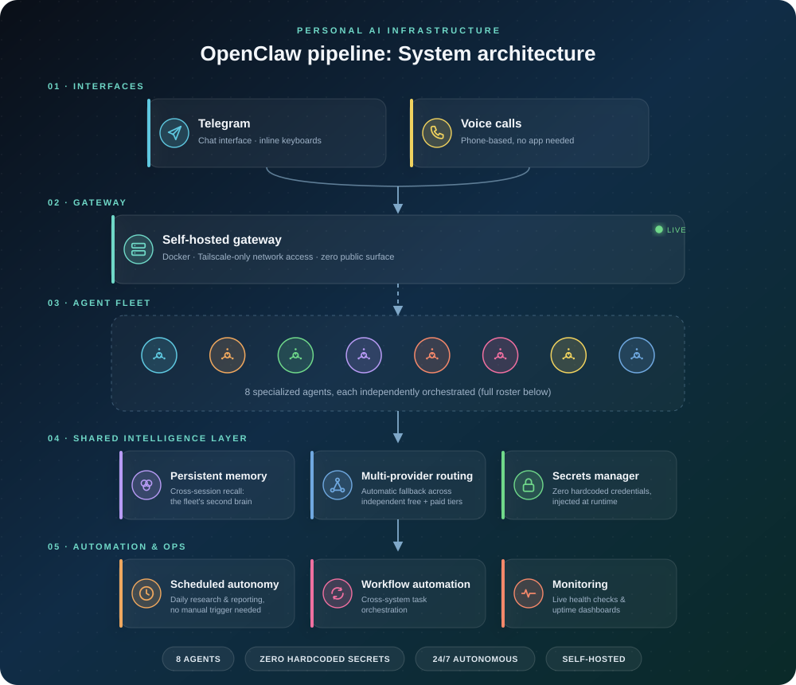
Autonomous agents
The fleet of agents that run daily operations.
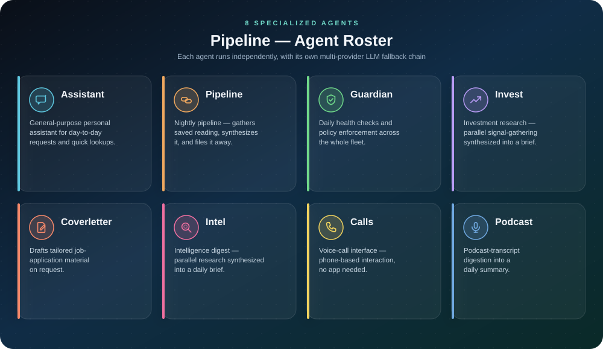
Anatomy of a request
How a task moves through the pipeline.
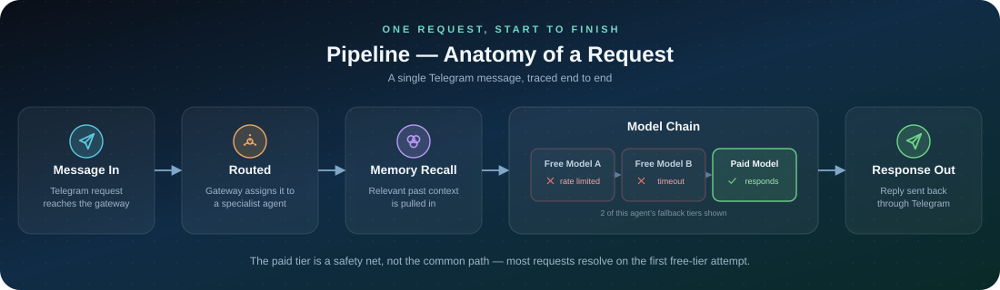
24-hour autonomy
Timeline of scheduled and event-driven runs.
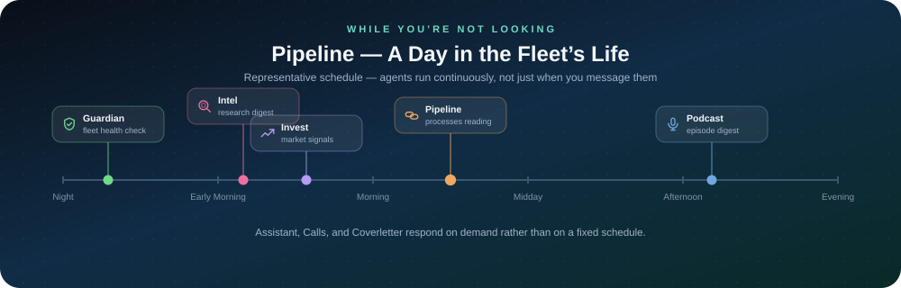
Resilience model
Independent fallback chains keep the system running.
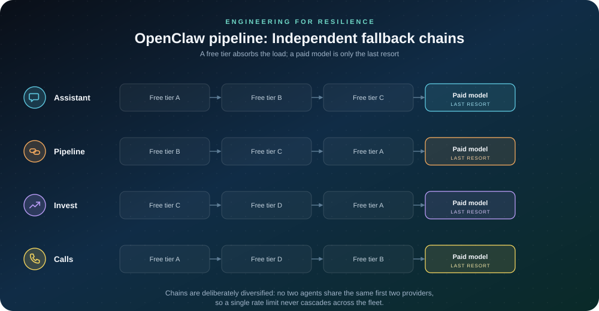
Workflow Automation Engine
Scheduled ETL that finds, cleans and files job postings
Workflow Automation Engine: scheduled n8n ETL pipelines from job boards and APIs into SQLite and Notion
| Author | Sérgio Pedro |
|---|---|
| AI / tools |
n8n – Workflow automation for scheduling and orchestrating data collection pipelines. Python – Custom data transformation and API integration scripts within workflows. SQLite – Embedded database for storing collected data and workflow outputs. Notion API – Integration for structured data storage and reporting. RapidAPI – Access to third-party data sources and API connectors. |
| Business value | Fully automated collection, normalisation and reporting: manual exports become one queryable, always-current dataset |
| Use cases | Data pipeline automation, ETL, competitor and price monitoring, lead lists, notification systems |
This project orchestrates scheduled and hourly data-collection runs across multiple job-board and API sources using n8n, tracing each listing from initial discovery through normalisation into SQLite, then syncing structured results into Notion for review and reporting. Custom Python steps handle transformation and API integration wherever a source needs more than a standard connector.
The same orchestration pattern generalises well beyond job discovery, to any recurring data-collection need a business has: competitor pricing, lead lists, market listings, or any other source that changes often enough to need continuous monitoring. It removes the manual collection work entirely and replaces scattered manual exports with a single, queryable, always-current dataset.
System architecture
How the n8n workflows connect to data sources and outputs.
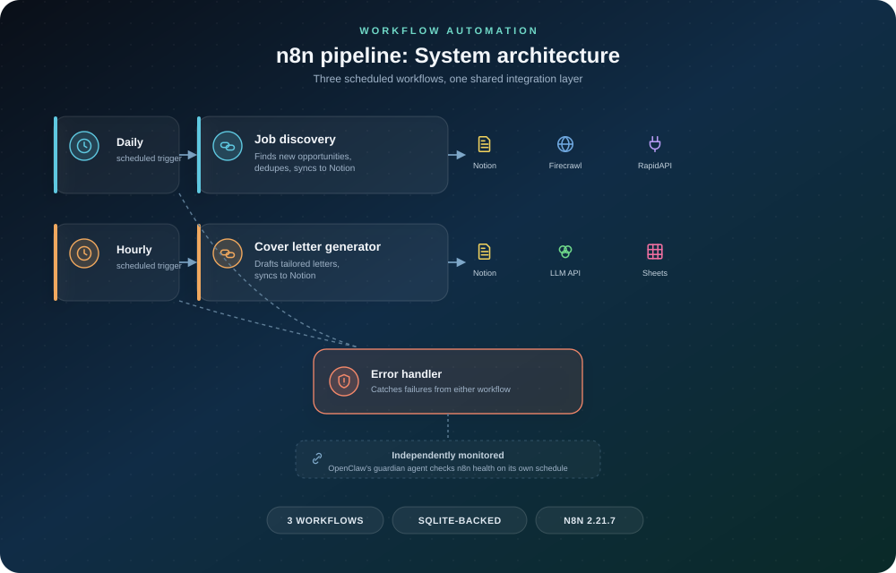
Schedule
Daily and hourly scheduled runs.
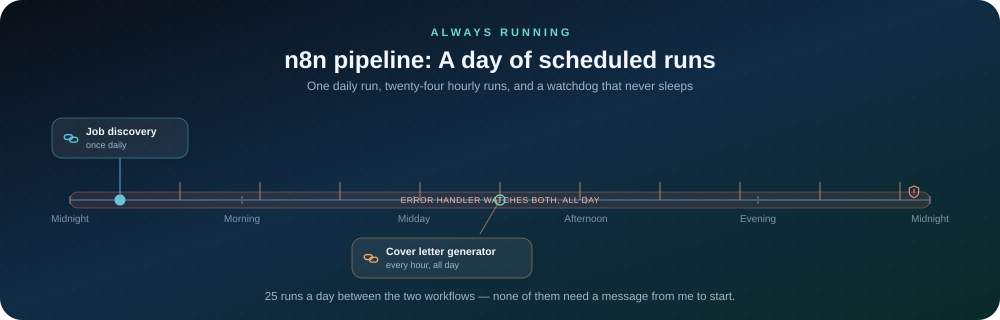
Data flow
One job posting traced end to end.
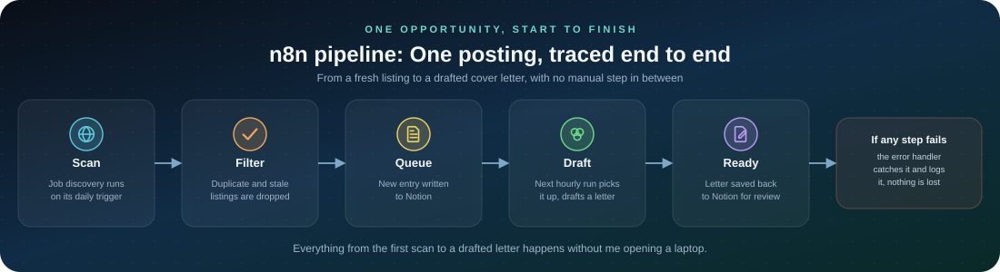
Interactive GIS dashboard
Multilayer self-updating map
Interactive GIS dashboard: a serverless geospatial dashboard with an automated multi-source data pipeline
| Author | Sérgio Pedro |
|---|---|
| AI / tools |
Leaflet.js + JavaScript – Multi-layer client-side rendering, filtering, and marker clustering at scale. Python + GeoPandas – GIS data pipeline normalising shapefiles and live REST feeds into one schema. GitHub Actions – Automated, scheduled multi-source fetch-and-deploy pipeline. |
| Business value | 28 independently toggleable layers plus real-time participant search and filtering, in one dependency-light map with no backend server |
| Use cases | Municipal GIS teams, EU-funded civic-participation programmes, field-operations and asset-tracking teams, retail or real-estate site selection, sales-territory mapping |
This is an interactive map built for MOVES-IT, an EU Urban Innovative Actions project run by the Matosinhos City Council, combining a live civic-participation dataset with the municipality's own open GIS data. Visitors can search and filter participants by parish, then layer in any combination of 28 independent thematic overlays, spanning municipal boundaries, social housing, green space, education and health facilities, culture and heritage, and mobility infrastructure, each sourced from a mix of committed shapefiles and the municipality's live ArcGIS feeds.
Two pieces of the underlying engineering generalise well beyond this one map. First, a point-in-polygon geographic resolver (a ray-casting even-odd algorithm implemented from scratch) derives each point's administrative parish directly from real boundary geometry, rather than trusting a possibly stale stored label, and a deterministic z-order rule keeps wide "context" polygons from ever occluding more specific layers regardless of the order they're toggled on. Second, a scheduled CI/CD data pipeline fetches from a dozen-plus live REST/ArcGIS endpoints and local geodata files on every deploy, normalises them into one client-side schema, and fails soft, so one unreachable source degrades a single layer instead of breaking the map.
The same architecture, heterogeneous sources merged into one schema, geospatial computation done client-side, and a dense multi-layer UI kept fast through clustering and lazy rendering, applies well beyond civic participation. Utilities and telecom field-operations teams can plot assets and incidents across overlapping data sources the same way; retail and real-estate analysts can overlay demographic, competitor, and zoning layers to inform site selection; sales organisations can build territory maps from CRM data; and any team doing ESG or compliance reporting gets the same pattern for combining regulatory geodata with their own operational footprint.
Interactive map
Participant markers, parish filtering, and 28 toggleable GIS layers. Participant names are anonymized for this public copy.
Funding AICopilot (SaaS)
Professional AI agent solution for funding acquisition and predictive market analysis
Funding AICopilot: custom AI agents that find EU funding, fill in the applications and cite every source
| Author | Sérgio Pedro |
|---|---|
| AI / tools |
Next.js 15 + TypeScript (Node 20) – Single application and API, with the Chrome extension behind Auto-apply in the same repository. SQLite – On-disk storage with versioned, idempotent SQL migrations. AI assistant – Cited answers and an adversarial validation pass over every synthesis. Playwright – Production-build tests across Chromium, Firefox and WebKit. Stripe, Resend, Sentry – Billing, transactional mail and error reporting. |
| Business value | Turns fragmented funding, regulatory and market data into a short, evidenced, profile-matched feed, and automates the application form filling |
| Use cases | Startups, SMEs, research groups, NGOs and consultancies that track EU funding calls and regulatory change |
Website: fundingaicopilot.tech
Organizations lose weeks every quarter to funding calls they missed, regulatory deadlines that crept up, and market signals scattered across dozens of portals and newsletters. Tracking it all by hand is a junior analyst's full-time job, and most teams do not have one. Alerts arrive without context, official portals stay fragmented, and consultancies are expensive and slow for day-to-day triage. Funding AICopilot closes that gap: one workspace where a team sees every open call matched to its profile, every regulatory deadline touching its sector, and the market signals that should change what it does this week.
The tedious work is automatic: deduplication, entity resolution, and pulling deadlines out of PDF tables. Funding auto-search finds the calls a company can actually apply for across EU public feeds, and Auto-apply, a Google Chrome extension, fills the application form from the profile, so the user reviews it and presses submit. A validated opportunity engine (signals, evidence, convergence, adversarial validation) delivers conclusions instead of a firehose, EU regulatory tracking follows the AI Act, GDPR, NIS2 and national rules in plain language, and a cited AI assistant links every claim to its primary source. Short daily or weekly digests arrive by email and Slack, and data is EU-hosted by default with a public sub-processor list.
Under the hood it is an ordinary stack held to an unusual standard: a coverage gate that fails on regression,
a single verify command for done, real-browser tests against the production build, migrations
built to be re-run, and fail-closed defaults. That is why changes can land daily without the quality bar
drifting. The same pattern, many fragmented public sources turned into a short, evidenced, profile-matched
feed, applies to any team that monitors grants, tenders, standards or regulation.
System architecture
How public sources become a curated, evidence-backed feed and an application draft.
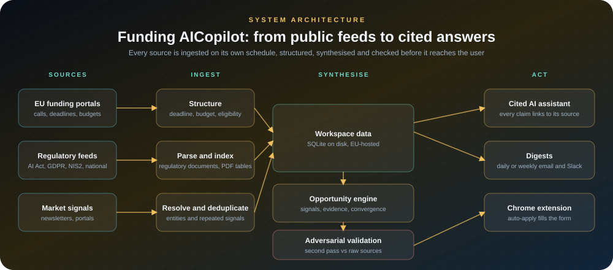
How it works
Four steps from a company profile to a reviewed application.
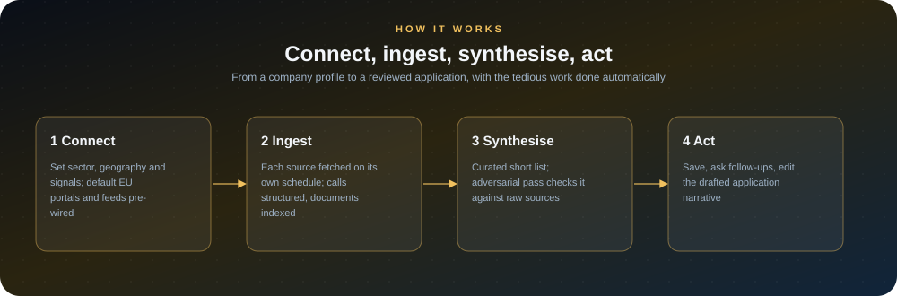
Engineering standard
The gates every push to main and every pull request must pass.
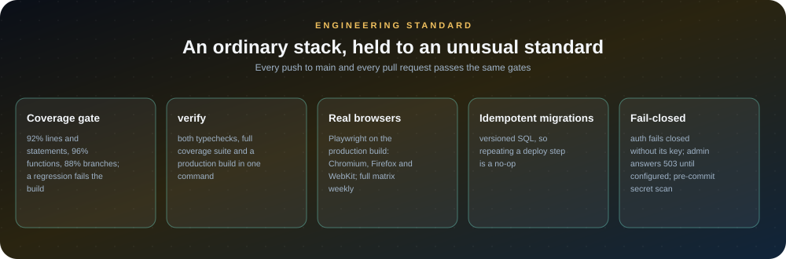
Machine learning text analysis and clustering
NLP and machine learning at scale
Machine learning text analysis and clustering: an NLP and topic-modelling pipeline that turns 1,150 papers into a map of a research field
| Author | Sérgio Pedro |
|---|---|
| ML / tools |
NLP preprocessing – Tokenisation, cleaning and automatic n-gram (collocation) detection, so that multi-word concepts such as nature_solutions become single features. NMF topic model – Non-negative matrix factorisation: unsupervised learning that splits a document-term matrix into topic-term and document-topic matrices, with 15 topics. Embedding and visualisation – A non-linear 2D embedding of the documents, one word cloud per topic, and topic trends over time. Python stack – litstudy, pandas, NumPy, matplotlib and seaborn, in a reproducible notebook. |
| Business value | Replaces weeks of manual reading with a reproducible ML pipeline that discovers the structure of a text collection without any labelled data |
| Use cases | State-of-the-art and horizon-scanning reviews for R&D and innovation teams, policy analysis, patent and tender landscaping, customer-feedback and support-ticket analysis |
The problem: a research field with more than a thousand papers cannot be read by one person, and there are no labels that say which paper belongs to which theme. This project solves it with unsupervised machine learning. Scopus returned about 1,700 documents for regenerative and net-positive urban development, of which 1,150 were selected as relevant, and a topic model learned the themes of the field from the text itself.
The approach: the paper text is cleaned and turned into a document-term matrix, with frequent n-grams detected automatically. Non-negative matrix factorisation (NMF) then factorises that matrix into a topic-term matrix (what each theme is about) and a document-topic matrix (how strongly each paper belongs to each theme). Because NMF is non-negative, topics are additive and easy to read, which makes the model interpretable rather than a black box.
The decisions that matter: the number of topics (15) is the main hyperparameter, a trade-off between coarse and fine-grained themes, chosen by inspecting the results. Each topic was validated qualitatively, by reading its top words and its most representative papers. The document-topic weights are thresholded (0.2) to tag papers with a theme, which makes it possible to follow how one theme's share of the literature changes per year and per journal.
The result: 15 themes found without supervision, from forests and nature-based solutions to circular economy, the built environment, energy and climate, and public space and housing, and a landscape in which every paper sits next to the papers that use similar language. The same pipeline applies to any large collection of text. It was built as part of a PhD research process and is reproducible end to end.
The ML pipeline
Five stages: data, NLP preprocessing, features, model and outputs, with a validation loop on the number of topics.
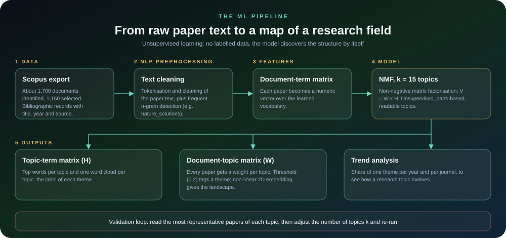
What the model learned
Fifteen themes discovered without labels, one word cloud per topic. The bigger the word, the more it defines the topic.
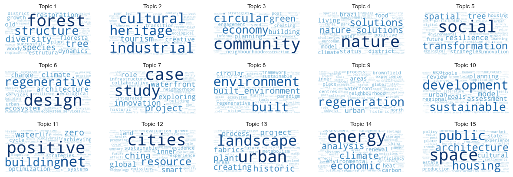
Document landscape
Each dot is a paper. Papers with similar language sit close together; colour and number show the main topic.
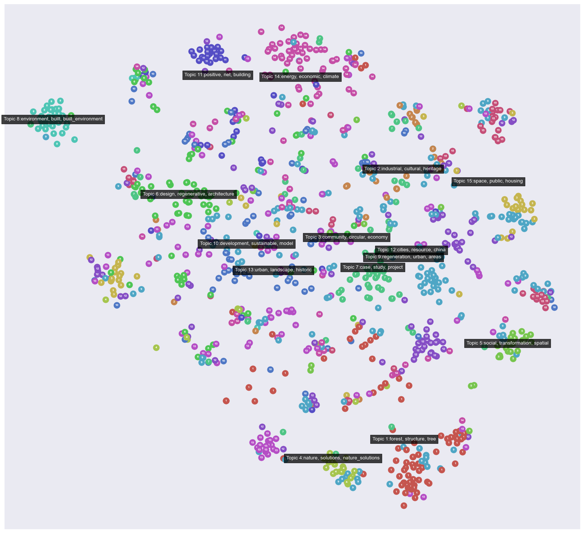
24/7 AI harness with kanban board
Self-dispatching AI work sessions, held back by safety gates
24/7 AI harness with kanban board: an autonomous controller that launches AI work sessions only when it is safe to do so
| Author | Sérgio Pedro |
|---|---|
| Engineering |
Scheduler and runner – A cron tick every five minutes enters through one script that takes an edit lock, so two sessions never write code at the same time. Observer and safety gates – Six independent checks (brake, previous report, fuse, stall and retry, empty queue, QA pre-flight). Any closed gate stops the launch and the reason is logged. Parser, generator and launcher – The requirements document is parsed into a JSON work queue, a brief is written for the next wave, and the session is created and briefed on the server. Publishing and reporting – Validated code is published repo-first (branch and review, then merge) and work status is mirrored to a Kanban board. |
| Business value | Removes the manual work of opening, briefing and babysitting overnight AI sessions, while a human keeps control of every decision that matters |
| Use cases | Overnight batch automation, orchestration of AI agents, controlled release pipelines, and any workflow where autonomy has to be bounded by auditable rules |
The problem: when there is pending work overnight, someone has to open a session, write the instructions and watch the result. Doing that by hand does not scale, and removing the human entirely is how automation runs away. This project automates the routine part and keeps the risky part gated.
The approach: a small controller wakes up every five minutes and asks one question: is it safe to dispatch? It reads the pending work from the requirements document, writes the brief for the next wave, launches an autonomous session and then does nothing until that session delivers its report. The golden rule is no report, no new wave: work is never launched on top of unfinished work.
The decisions that matter: safety is built from independent gates rather than one clever check, so a single failure is enough to stop. A fuse disarms the loop after several dispatches with no new report, and a stalled wave gets one authorised retry and then a safe stop. The scope is deliberately fixed to one project, and anything that needs an owner decision goes to a form instead of being decided by the machine. There is no force-push, and no secrets or state are stored in the repository.
The result: a loop that has emitted waves up to number 52, guarded by 99 test suites and a single entry point for automation (green means it may dispatch). It is the execution half of a pair: the Self-improvement loop for AI harness decides what is worth fixing, and that harness runs the fix.
The dispatch loop
Eight steps from the clock to the report, and back. The report is what unlocks the next wave.
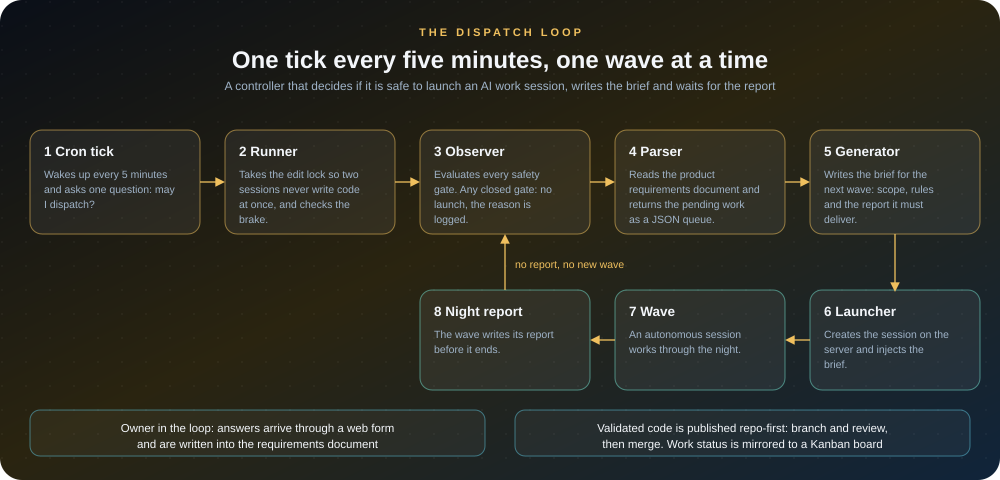
The safety gates
One closed gate is enough to stop the launch, and every stop leaves a reason in the log.
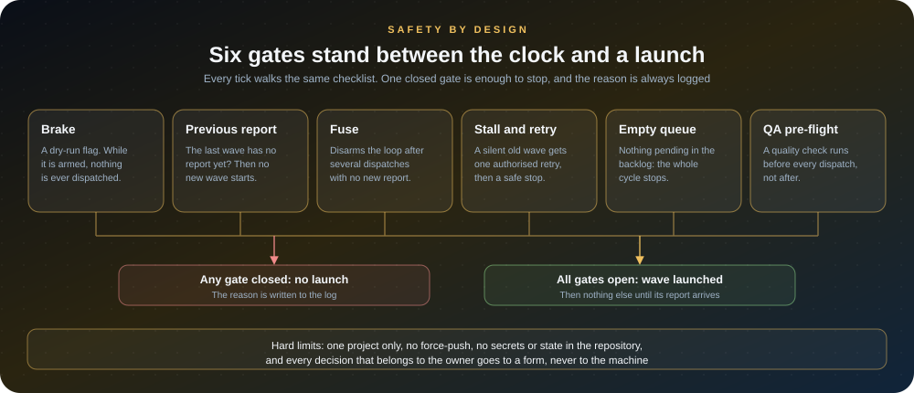
Self-improvement loop for AI harness
Defects found, approved by a human, fixed and proven
Self-improvement loop for AI harness: a governed pipeline that turns defects found overnight into approved, proven fixes
| Author | Sérgio Pedro |
|---|---|
| Engineering |
Extractor and intake gate – Reads each wave's report and turns new defects into candidates. A gate decides what deserves to become a candidate at all. Fingerprinting – Every defect gets a fingerprint, so the same problem is never raised twice. Human approval – The owner approves or rejects each candidate in a form. A consumer script records the answer and never touches the proposal itself. Weighted, repeatable selection – An approved candidate is picked by score with a deterministic seed, then fixed by an autonomous wave that records its own proof. |
| Business value | Turns the lessons buried in reports into a prioritised, auditable backlog and fixes them autonomously, with no change made without human approval |
| Use cases | Continuous-improvement programmes for AI agents and automated pipelines, incident follow-up, tech-debt management, and any process that needs autonomy with an approval trail |
The problem: a system that runs by itself overnight accumulates defects that nobody writes down, and the knowledge ends up buried in reports. This project collects those defects, shows them to the owner, and only after an explicit human answer sends a wave to fix them, recording in one place exactly what changed and with what evidence.
The approach: each wave writes a report. An extractor turns the new defects into candidates, an intake gate filters them, and a fingerprint removes duplicates. The owner then approves, rejects or asks for more context in a form. Approved candidates are picked by weighted score and implemented by an improvement wave that writes back its proof: commits, passing test suites and measurements.
The decisions that matter: nothing is implemented without a human answer. That rule has no exceptions, and there is no language model deciding and no auto-approval. Every script has narrow write permissions: the extractor never edits or deletes, the reply consumer only touches status and answer, and the improvement waves never create or edit candidates. A first version kept a second queue file, which was removed on purpose, because two sources of truth were a defect in themselves.
The result: 200 candidates tracked in a single git-tracked document of about 4,400 lines, improvement waves emitted up to number 52 since early October 2026, and ten dedicated test suites. It is the decision half of a pair: this loop chooses what is worth fixing, and the 24/7 AI harness with kanban board launches the work.
The improvement loop
Nine steps from a defect in a report to a proven fix. The only human step is also the only gate that cannot be skipped.
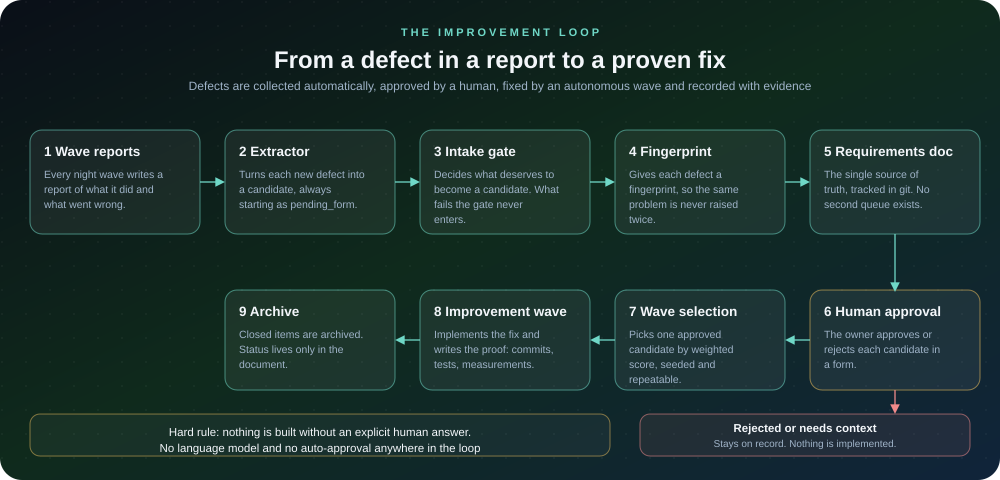
Life cycle and write permissions
A candidate leaves its first state only through a human answer, and each script can write only its own part of the document.
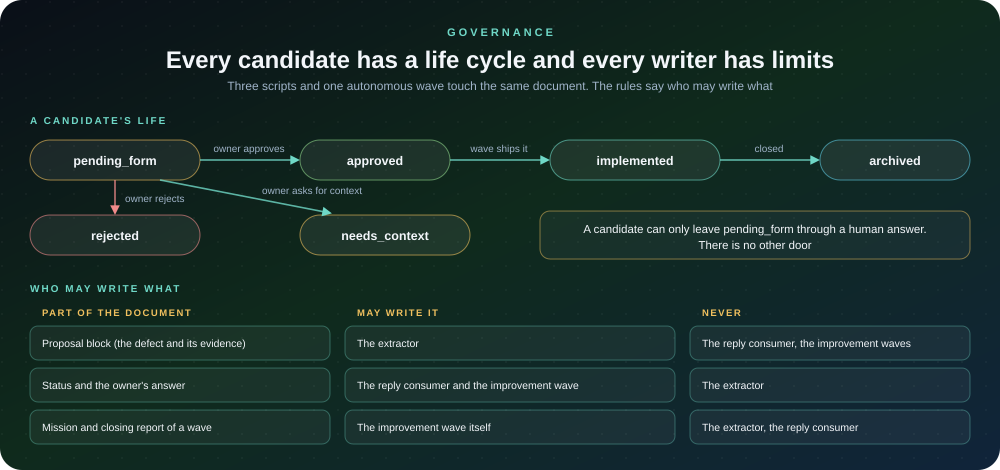